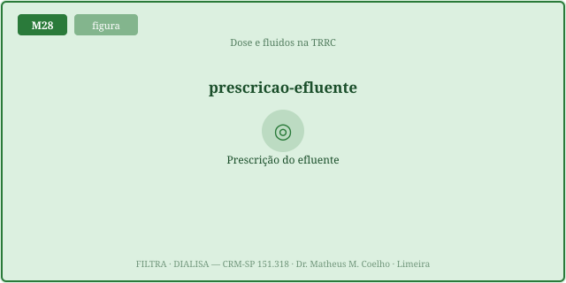
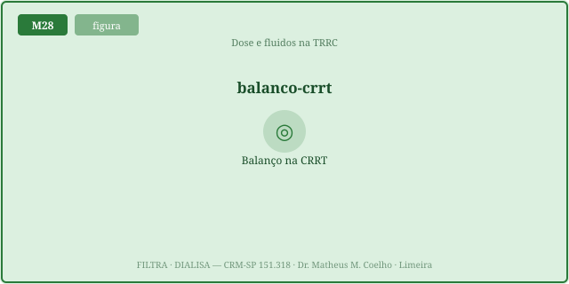
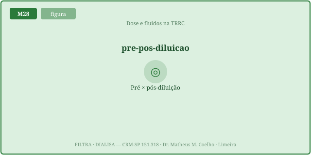
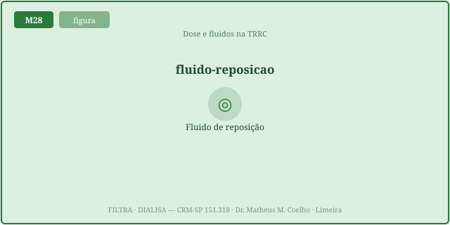
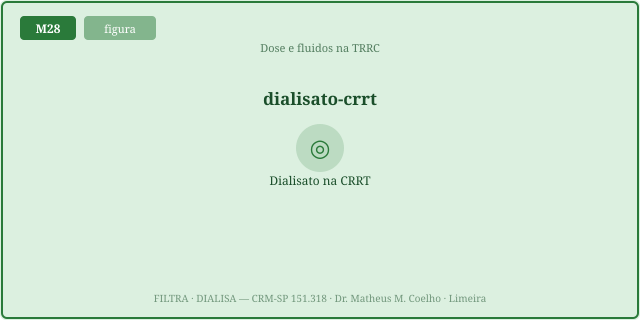

dose = Q_efluente ÷ peso em mL/kg/h (alvo prescrito 25 mL/kg/h). O
líquido de reposição entra antes do filtro (pré → protege, mas custa clearance) ou depois
(pós → clearance cheio, mas fração de filtração alta → coágulo). E a dose entregue é menor que a
prescrita por interrupções (downtime). É homeostasia por máquina, escrita em mililitros.A TRRC é diálise lenta e ininterrupta. Onde a HDI (M25) mede
dose por Kt/V, a TRRC mede por efluente normalizado ao peso. As Fig. 1–8 voltam no Caso, na
Trilha e na Avaliação. A fórmula da dose: dose (mL/kg/h) = Q_efluente (mL/h) ÷ peso (kg);
o fator de pré-diluição: fator = Q_plasma ÷ (Q_plasma + Q_pré). Atribuição em
CREDITS.md (em curadoria). Esta é homeostasia por máquina — defender o meio interno
apesar da LRA, em fluxo contínuo.
Tudo o que sai do filtro como efluente (reposição + dialisato + UF líquida) é o que "depura". A dose é esse volume por hora dividido pelo peso. Alvo prescrito 25 mL/kg/h (RENAL/ATN): mais não melhora desfecho, só dá mais perdas e custo.
O circuito para: trocas de bolsa, coágulo, exames, transporte. Cada parada é tempo sem depurar. Dose entregue = prescrita × (1 − downtime). Prescrever 25 com 20% de parada entrega 20.


Na convecção (CVVH), a reposição entra antes do filtro (pré) → dilui o sangue → clearance efetivo menor (fator = plasma/(plasma+pré)), mas protege o filtro; ou depois (pós) → clearance cheio, mas a fração de filtração sobe.


FF = Q_uf ÷ Q_plasma. Em pós-diluição, FF alta concentra o sangue no fim do filtro → hemoconcentração → coágulo. Manter FF < ~20–25%. A pré-diluição soma volume ao plasma → derruba a FF.

Na TRRC os solutos pequenos têm peneiramento ~1: o clearance ≈ a taxa de efluente. A pós entrega clearance cheio; a pré fica abaixo, penalizada pelo fator. Compense subindo o efluente.
Síntese: a dose é o efluente (mL/kg/h); prescreva acima do alvo porque o downtime cobra; em CVVH escolha pré (protege, custa clearance) × pós (clearance, arrisca coágulo) pela fração de filtração. O clearance ≈ a taxa de efluente, corrigido pela pré-diluição.
Homem de 70 kg, choque séptico com LRA KDIGO 3, anúrico. Indica-se TRRC (CVVH). Você prescreve a dose.
dose = Q_efluente ÷ peso. Mas esse é o alvo de entrega — guarde a Fig. 3.plasma/(plasma+pré). Conduta:
subir o efluente prescrito para compensar a penalidade e manter a entrega.A taxa de efluente normalizada ao peso:
dose = Q_efluente ÷ peso, em mL/kg/h. Não é o Kt/V da HDI.
25 mL/kg/h prescritos (entregar ~20–25). Acima disso o benefício achata (RENAL/ATN) e as perdas sobem.
O circuito para
(trocas, coágulo, exames, transporte): entregue = prescrita × (1 − downtime).
Prescrevendo acima do alvo (≈25–30 mL/kg/h) para que a entrega real alcance os 20–25.
A reposição entra antes do filtro → dilui o sangue → menos coágulo, mas o soluto também dilui → clearance efetivo menor.
A reposição entra depois do filtro → o soluto chega concentrado → clearance cheio, mas a fração de filtração e a hemoconcentração sobem.
fator = Q_plasma ÷ (Q_plasma +
Q_pré). O clearance efetivo = (efluente) × esse fator (<1).
FF = Q_uf ÷ Q_plasma; Q_plasma = Qb·(1−Hct). Manter < ~20–25% (pós) para não coagular.
Aumentar o Qb (mais plasma), reduzir o ultrafiltrado, ou mover reposição para pré-diluição (soma volume ao plasma efetivo).
A TRRC substitui o rim em fluxo contínuo: depura escória e ajusta volume/eletrólitos. A dose (efluente) é o quanto dessa homeostasia a máquina entrega por hora.
Os controles do Lab alimentam estas curvas. A linha cheia (verde) é a pós-diluição (clearance ≈ efluente cheio); a tracejada (azul) é a pré-diluição, penalizada pelo fator plasma/(plasma+pré). O marcador laranja é o ponto de operação. Veja a pré ficar sempre abaixo da pós — o custo de clearance da proteção do filtro.
| Variável | Atual | Comentário |
|---|---|---|
| Dose PRESCRITA (mL/kg/h) | — | efluente ÷ peso |
| Dose ENTREGUE (mL/kg/h) | — | após o downtime |
| Fluxo de plasma (mL/min) | — | Qb·(1−Hct) |
| Fração de filtração FF (%) | — | < 25% = seguro |
| Fator de pré-diluição | — | plasma/(plasma+pré) |
| Clearance efetivo (mL/min) | — | ≈ efluente × fator |